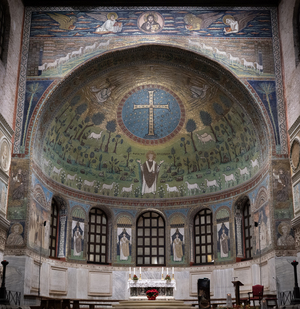
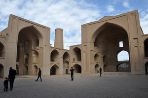

ⲕⲛϩⲉ S, ⲕⲉϩⲛⲓ B (only K, v AZ 24 91) nn f, porch, shrine (?): 1 Kg 5 4 ἐμπρόσθιος, ib πρόθυρον = P 44 109 حانوت, ib 60 = 43 29 ⲕ. · ⲧⲁⲃⲓⲣ خزانة، دفير, Am 8 3 (gloss, B Gk om), FR 72 ⲕ. in temple within Holy of Holies, BMis 104 Zacharias slain in ⲡⲧⲁⲃⲓⲣ ⲛⲧⲕ. of sanctuary (Mor 33 63 om), P 12914 127 cudgels fetched from ⲧⲕ. ⲙⲡⲉⲑⲩⲥⲓⲁⲥⲧⲏⲣⲓⲟⲛ, Ryl 94 ⲧⲕ. ⲛⲛⲥⲓⲕⲛⲟⲛ (σίγνον) where soldiers take oath, K 157 B معقمة (threshold, between ⲗⲁϫⲗⲉϫ & ⲑⲃⲁⲓ); side, angle (?): 3 Kg 6 13 ὠμία حانوت (P 44 111).
(noun feminine)
construction
porch, shrine ?
side, angle ?
side, angle ?



1: apse, 2: iwan, 3: corner
complete
113a
133b
ⲕⲉϩⲛⲓ B v ⲕⲛϩⲉ.
See also:
Homonyms:
| view | ⲧⲁⲃⲓⲣ SB | (noun masculine) sanctuary [δαβειρ]1574 |
| view | ϩⲁⲉⲓⲧ, ϩⲁⲓⲉⲓⲧ, ϩⲁⲉⲓⲏⲧ, ϩⲁⲓⲧ, ϩⲉⲉⲓⲧ, ϩⲏⲉⲓⲧ, ϩⲏⲓⲉⲓⲧ, ϩⲟⲉⲓⲧ S | (noun feminine) gateway, porch, forecourt [πυλων]274 |
| view | ϣⲟⲩϣⲧ SLB ϣⲱϣⲧ SA | (noun masculine) window [θυρις]
niche, alcove [θυρις]2021 |
Homonyms:
| view | ⲧⲉϩⲛⲉ SA ⲧⲉϩⲛⲓ BF | (noun feminine) forehead [μετωπον]1688 |